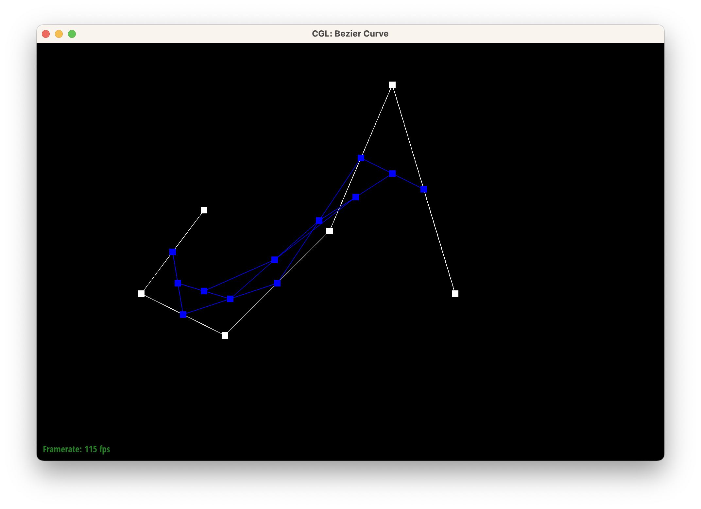
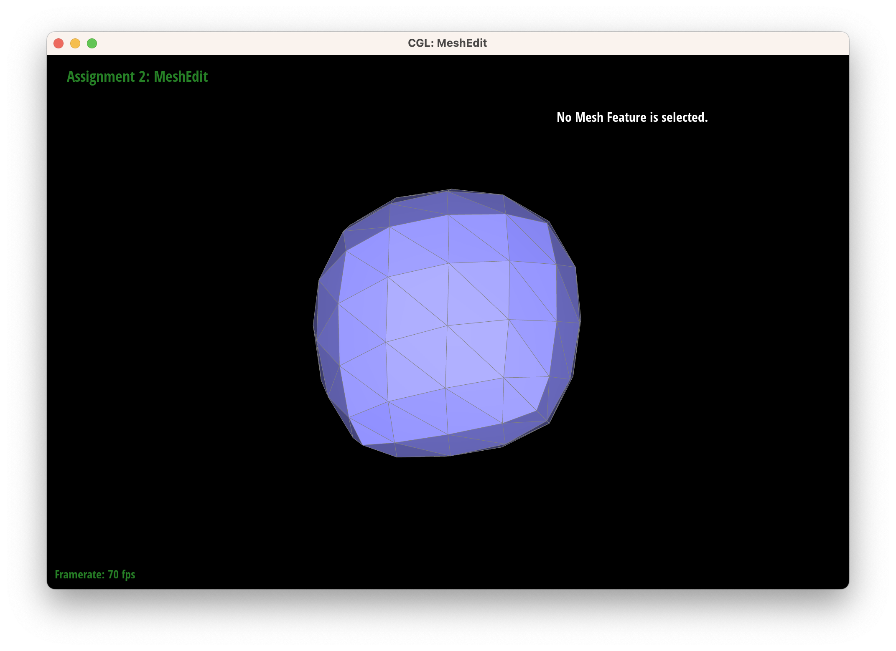

Overview
In this project we explored topics related to geometric modeling by buuilding Bezier curves/surfaces with De Casteljau's algorithm, manipulating triangle meshes represented by the half-edge data structure, and implementing loop subdivision for upsampling meshes. In addition, we went above and beyond and designed own polygon mesh using the modeling program Blender for extra credit.
Section I: Bezier Curves and Surfaces
Part 1: Bezier Curves with 1D de Casteljau Subdivision
Briefly explain de Casteljau's algorithm and how you implemented it in order to evaluate Bezier curves.
De Casteljau's algorithm is an algorithm that evaluates a Bezier curve given a parameter $t$.
The algorithm is implemented in the function BezierCurve::evaluateStep in student_code.cpp as follows. Given $n$ ordered control points $p_0, p_1, \ldots, p_n$, we perform the following:
- Insert a point at $t$ using lerp on the line segments between the given $n$ control points (this is done once).
- Insert a point at $t$ using lerp on the line segments between the intermediate points (this is done $n-2$ times).
- Return a vector (which is used as a list in this case) of the interpolated points (which will be the intermediate points for the first $n-2$ iterations or the final interpolated vector for the final iteration).
Specifically, at each step of the algorithm, we iterate over each adjacent pair $p_i, p_{i + 1}$ of intermediate points, computing the new intermediate point $p_i' = \text{lerp}(p_i, p_{i+1}, t)=(1-t)\cdot p_i + t\cdot p_{i+1}$.
Take a look at the provided .bzc files and create your own Bezier curve with 6 control points of your choosing. Use this Bezier curve for your screenshots below.
We define the following curve at the control points $(0.400, 0.600), (0.250, 0.400), (0.450, 0.300), (0.700, 0.550), (0.850, 0.900), (1.000, 0.400)$.

Show screenshots of each step / level of the evaluation from the original control points down to the final evaluated point. Press E to step through. Toggle C to show the completed Bezier curve as well.
|
|
|
|
|

|
|
|
|
Show a screenshot of a slightly different Bezier curve by moving the original control points around and modifying the parameter $t$ via mouse scrolling.
We shifted the control points to form a flatter curve:
The default parameter of $t$ is $0.5$. When we modified this, we found that the intermediate points skewed closer towards either of the two previous points, and the final interpolated point shifted closer to the start (lower $t$) or end (higher $t$) of the curve.
|
|
|
|
|
Part 2: Bezier Surfaces with Separable 1D de Casteljau
Briefly explain how de Casteljau algorithm extends to Bezier surfaces and how you implemented it in order to evaluate Bezier surfaces.
A 3-dimensional Bezier surface is defined by an $n \times n$ grid of control points in 3D space. This is equal to a series of parallel $n$-control-point Bezier curves along one axis $x$, interpolated across the orthogonal axis $y$. To evaluate a Bezier patch at this surface, we supply the parameters $(u, v) \in [0, 1]$. The patch is sampled using an approach called the separable 1D de Casteljau algorithm: first, we use the de Casteljau algorithm to evaluate point $u$ at each of the Bezier curves along axis $x$, giving us one final interpolated point per curve. We use these results as the control points for a Bezier curve along the cross axis $y$, called the "moving" curve; one final invocation of de Casteljau evaluates this moving curve at $v$, giving us the surface position corresponding to $(u, v)$. The ability to perform one-dimensional de Casteljau independently across each axis gives the algorithm the notion of "separability".
Below we show a screenshot of bez/teapot.bez (not .dae) evaluated by our implementation:
Section II: Triangle Meshes and Half-Edge Data Structure
Part 3: Area-Weighted Vertex Normals
Briefly explain how you implemented the area-weighted vertex normals.
We implemented the area-weighted vertex normals by taking the area-weighted average of the normals of neighboring triangles, where the area weighting was done via the cross product, then normalizing via a call to .unit() before returning.
We traversed the halfedge data structure starting by making a constant iterator via HalfedgeCIter, which we then traversed as seen in the discussion worksheet:
- We initialize an empty zero
Vector3Dobject, then use ado-whileloop for the following: - We get the face's unit normal vector by calling the
normal()on theFace - Access the vertex in the half edge's position Vector3D
- Access the next half edge's position Vector3D point
- Access the next next half edge's position Vector3D point
- Find the vectors by taking the difference of the next vectors with the original vertex's halfedge
- Note that this procedure of only going two forward is collectively exhaustive since the halfedge's face is guaranteed to be a triangle
- Take the cross product of the two difference vectors and divide by two (since we only want the area of the traiangle, whereas the cross product gives the area of the parallelogram)
- Find the $\ell_2$ norm of the resultant vector, to get the euclidean length
- Then multiply the resultant length with the vertex normal and add this to a variable outside the loop to accumulate the area-weighted average
- Finally we move the iterator along to the access the twin half edge
- Once the loop is broken, which is done when our const iterator returns to the halfedge we started at (found by the class'
halfedge()method), then we normalize via a call to.unit()before returning
Show screenshots of dae/teapot.dae (not .bez) comparing teapot shading with and without vertex normals. Use Q to toggle default flat shading and Phong shading.
|
|
|
|
|
|
|
How do we explain this sharp increase in fidelity? Without vertex normals, each mesh face is shaded uniformly, so the teapot shading is only as detailed as the mesh itself. In this case, the flat shading (pictured left) creates visibile "blocks" of color. With vertex normals (pictured right), we can create a continuous interpolation of shading values across a single face, creating a smooth texture that transitions cleanly between mesh vertices. Weighting by area preserves this smoothness in cases where faces are not uniform, like near sharp contours in the teapot's handle and spout.
Part 4: Edge Flip
Briefly explain how you implemented the edge flip operation and describe any interesting implementation / debugging tricks you have used.
We implemented the edge flip operation by drawing the following diagrams for reference:
|
|
|
as indicated on
this link but in the opposite direction for the context of our implementation. We will define the mesh polygon as the polygon defined at the vertices $v_0, v_1, v_2,$ and $v_3$.
We then proceeded to implement the following steps:
EdgeIter if the isBoundary() function returns true (which only happens if the element is on the boundary).
We then assign these to the respective HalfedgeIter for each of the ten halfedges that may be affected by the edge flip operation.EdgeIter for each of the four edges that may be affected by the edge flip operation.VertexIter for each of the four vertices that may be affected by the edge flip operation.FaceIter for each of the two faces that may be affected by the edge flip operation.halfedge, edge, vertex, or face. As said above, this may appear to be inefficient due to some not being used but we optimize for correctness here -- which is an interesting implementation detail.halfedges of interest using the setNeighbors() method.vertexs and two faces of interest, and return the now flipped EdgeIter.
Show screenshots of the teapot before and after some edge flips.
|
|
|
An interesting property of the edge flip operation is that, if the mesh polygon is nearly degenerate, then the edge flip will produce a triangle that is nearly degenerate. To be specific, if the polygon is close in shape to a triangle, then the resulting edge flip will produce a triangle with nominal area.
|
|

|
The extremely dark strip in both images is a nominal triangle that, because of its small area, has an inaccurate vertex normal and is shaded incorrectly. This is, for the moment, expected behavior.
Write about your eventful debugging journey, if you have experienced one.
At first, we mistakenly assumed that the only changes needed were to reassign neighbors of half edges $h_0$ and $h_3$. This produced a result where, upon flipping an edge in the mesh, the entire mesh polygon would disappear:
After realizing our oversight, we reassigned the neighbors of every half edge inside and neighboring the mesh polygon within which the edge flip took place. However, instead of resulting in a correct edge flip, our fix merely ensured that one of the faces in the mesh polygon would not disappear.
At this point we decided to follow the advice of the implementation guide and reassign every pointer of every element within the mesh polygon, giving us a correct result. It turns out that, in the process of redefining the half-edges,one of the faces was no longer being referenced correctly. Thus, even though the half-edge pointed to by the face hypothetically doesn't change, it was important to update the references after all of the half-edge modfications were done.
TL;DR keeping track of all the pointers is hard ;-;
But with a good diagram it is doable!
Part 5: Edge Split
Briefly explain how you implemented the edge split operation and describe any interesting implementation / debugging tricks you have used.
We refer to the following diagrams when discussing the edge split operation:
We then proceeded to implement the following steps:
- We start out by doing a check to make sure that we never flip a boundary edge: by simply returning the current
EdgeIterif theisBoundary()function returns true (which only happens if the element is on the boundary). - Then we do something that may appear to be inefficient but the no-ops will likely be optimized by the compiler and the developer time is more sensitive than the program's runtime as it already runs without noticable latency.
- We create a
HalfedgeIterfor each of the ten halfedges that may be affected by the edge flip operation. - We create a
EdgeIterfor each of the four edges that may be affected by the edge flip operation. - We create a
VertexIterfor each of the four vertices that may be affected by the edge flip operation. - We create a
FaceIterfor each of the two faces that may be affected by the edge flip operation.
- We create a
- In addition, we create
- 1 new vertex, defined as the midpoint of the edge being split,
- 2 new faces, defined as the bottom 2 faces created by the edge being split,
- 3 new edges, to form the total 4 resulting from the operation, and
- 6 new half-edges, populating the newly created faces in groups of three.
- 2 new faces, defined as the bottom 2 faces created by the edge being split,
- 1 new vertex, defined as the midpoint of the edge being split,
- We then assign these to the respective
halfedge,edge,vertex, orface, in that order. As said above, this may appear to be inefficient due to some not being used but we optimize for correctness here. - Next we re-assign the six
halfedges of interest using thesetNeighbors()method. - Finally to complete the method we re-assign the two
vertexs and twofaces of interest, and return the now flippedEdgeIter.
An interesting implementation detail about this is that we actually chose to do something that may appear to be inefficient:
We then assign these to the respective halfedge, edge, vertex, or face.
As said above, this may appear to be inefficient due to some not being used but we optimize for correctness here -- which is an interesting implementation detail.
However on the bright side, the no-ops will likely be optimized by the compiler and the developer time is more sensitive than the program's runtime as it already runs without noticable latency (and we are coding in the fast compiled language that is C++ lol).
Show screenshots of a mesh before and after some edge splits.
|
|
|
|
Show screenshots of a mesh before and after a combination of both edge splits and edge flips.
|
|
|
Here we can see a variety of edge splits and edge flips, as on approximately the 4th row down, the approximately 5th column from the left has a split followed by a variety of additional splits and flips. From this, we can see that 3 down we see an edge split and we also did a combine of splits and flips for the next 2 columns rightwards.
Write about your eventful debugging journey, if you have experienced one.
This time, we took the precaution of reassigning all pointers to all elements when performing the edge split. However, during our first tests, attempts to split a mesh edge resulted in a segmentation fault. Here we realized that we were not performing any edge reassignments! Because they were unnecessary in edge flips, we neglected them when copying code from the edge flip operation. Fixing this resolved the issue, but splitting an edge was only halving one of the two faces in the mesh polygon:
After careful examination, we identified the culprit as one of the half-edges ($h_4$ on our diagram) being assigned to the wrong vertex. Then, our edge splitting begun to leave out a different edge:
Resolving this bug proved a bit more tricky. We found that reassigning values to the outer edges ($h_6$, $h_7$, $h_8$, and $h_9$) finally resulted in a correct edge split; we had avoided this due to their twin half-edges being unknown, but these could simply be assigned to their existing values.
If you have implemented support for boundary edges, show screenshots of your implementation properly handling split operations on boundary edges.
Extra Credit:
Our implementation of splitting boundary edges closely resembles that of other split operations, with the caveat that we only reassign or add mesh elements contained in the non-boundary face. We do this by taking the half-edges of the edge to be split and checking which one is on the boundary:
beetle.dae prior to boundary edge split |
beetle.dae after a single boundary edge split |
maxplanck.dae prior to boundary edge split |
maxplanck.dae following numerous boundary edge splits |
Part 6: Loop Subdivision for Mesh Upsampling
Briefly explain how you implemented the loop subdivision and describe any interesting implementation / debugging tricks you have used.
We performed loop subdivision in the order of operations suggested by the spec:
- Compute the positions of the existing vertices in the mesh as a weighted sum of their neighbors,
- preemptively compute the positions of the new vertices that will be created from splitting edges,
- split each edge that was originally in the mesh,
- update the newly created vertices to their computed positions,
- flip the edges that (a) connect an old vertex to a new vertex, and (b) are not subdivisions of one of the original edges in the mesh, and
- update the original vertices to their computed position.
Take some notes, as well as some screenshots, of your observations on how meshes behave after loop subdivision. What happens to sharp corners and edges? Can you reduce this effect by pre-splitting some edges?
We noticed an analogy to project 1 -- where we supersampled to reduce jaggies if possible -- the meshes here after loop subdivision showed a similar effect. As we performed subdivisions, we noticed that the meshes became more and more rounded with sharp corners and edges being smoothed away:
|
|
|
|
|
|
|
|
|
as we can clearly see the lack of sharp corners and edges after 5 subdivisions.
If we pre-split some edges, we can reduce the effect of smoothing on sharp corners and edges. This is because the edge splits will create new vertices that will be used to update the positions of the existing vertices. As such, each vertex has a higher degree, and the distorting effect of upsampling on its new position is reduced. This will result in the new vertices being placed at the corners of the mesh, and the existing vertices being placed at the center of the mesh. This will result in the mesh being more rounded, but the corners and edges will be preserved.
Load dae/cube.dae. Perform several iterations of loop subdivision on the cube. Notice that the cube becomes slightly asymmetric after repeated subdivisions. Can you pre-process the cube with edge flips and splits so that the cube subdivides symmetrically? Document these effects and explain why they occur. Also explain how your pre-processing helps alleviate the effects.
|
|

|
|
|
|
|
|
|
The asymmetry of the upsampled cube comes from the asymmetry of the original cube's face. Two of the vertices are connected by a mesh edge, while the other two are not. Because the vertex positions are updated according to the weighted sum of their neighbors, the connected vertices remain closer to their original position to the unconnected ones.
Thus, we can pre-process the cube by splitting the diagonal edge on each of its faces, ensuring that each vertex has the same degree. This counts as pre-processing as we only split the edges once before the first upsample, and no later splits are ever required to maintain the symmetry. No flips are necessary.
Note that this split needs to occur on each of the 6 faces, leading to a pre-processing of 6 split operations.
|
|
|
This fixes the initial asymmetry that is seen on the left above, and allow us to upsample without worries of the asymmetry being spread.

|
|
|
|
|
If you have implemented any extra credit extensions, explain what you did and document how they work with screenshots.
Support meshes with boundary:
Once we achieved the splitting of boundary edges, it was natural to apply this functionality to upsampling. One of the difficulties we encountered was that boundary vertices did not have their positions updated correctly:
|
|
|
Here we realized that degree() ignores vertices on boundaries and thus doesn't compute their degrees properly. By calculating the degree manually during the upsampling process, we were able to yield a more reasonable result.
Observe the difference in quality between a single upsample with and without boundary support:
|
|
|
|
Implement additional subdivision schemes:
Furthermore we implemented other subdivision schemes:
- $\sqrt{3}$-subdivision scheme: here we inserted a new vertex at every triangle's center, computed by taking the 3-way average of the triangle's vertices, while maintaining the invariant that every vertex has exajctly 6 neighbors (a degree of 6). This subdivision scheme is uniquely identifiable as it leads to the following interesting effect: after upsampling an even $n$ number of times ($\exists k: n = 2k$), each of the original triangles are replaced with $9^{k}$ triangles.
- Butterfly subdivision scheme: This scheme is a generalization of the $\sqrt{3}$-subdivision scheme, where we insert a new vertex at every triangle's center, but now we compute the new vertex position by taking the equations in https://citeseerx.ist.psu.edu/viewdoc/download?doi=10.1.1.133.8925&rep=rep1&type=pdf and applying them to the original mesh. This leads to a vastly different mesh, after upsampling as shown below.
- Loop subdivision scheme: this was the original subdivision scheme we did.
|
|
|
Part 7 (Optional, Possible Extra Credit)
Save your best polygon mesh as partsevenmodel.dae in your docs folder and show us a screenshot of the mesh in your write-up.
Complete.
Include a series of screenshots showing your original mesh and your mesh after one and two rounds of subdivision. If you have used custom shaders, include screenshots of your mesh with those shaders applied as well.
Complete.
Describe what you have done to enhance your mesh beyond the simple humanoid mesh described in the tutorial.
Complete.
Link to this site: https://cal-cs184-student.github.io/project-webpages-sp23-rsha256/proj2/index.html